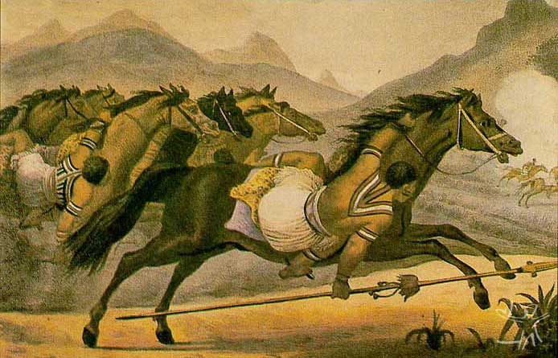

Etogo
O Navio, ou Etogo, é o ritual que os Kadiwéu consideram a expressão mais visível de sua alteridade, pois, como dizem, é o que melhor mostra que eles são "índios mesmo". Realizado em 1992, havia pelo menos cinqüenta anos que não vinha sendo encenado e não voltou a ser repetido após essa data. A motivação imediata para a sua realização foi a necessidade de mostrar a brancos, seus convidados, o ritual mais expressivo de sua identidade.
O Navio é um longo ritual. Faz referência à Guerra do Paraguai, notada, entre outros aspectos, pela afixação, a cada lado da entrada do navio de tabocas que construíram para ser o espaço ritual, de bandeiras estilizadas do Brasil e do Paraguai. O Navio mimetiza um navio de guerra, tal como os que os Kadiwéu dizem ter visto, no passado, a percorrer o rio Paraguai.